Atlas
Atlas is a campus navigation app that connects college students to the resources hidden across their university: study spots, cheap eats, events, and the places it normally takes a year to find. As the sole designer at a pre-seed EdTech startup, I owned product design end-to-end, collaborating directly with the founders on feature prioritization, information architecture, and roadmap decisions. I also presented this design work and UX research directly to angel investors in face-to-face pitches, work that helped the team place in the top third of 117 teams at the UW Dempsey Startup Competition and back a $56K seed ask.

How might we help students discover their campus in weeks, not a year?
University is often a student's first real taste of independence — a new city, a new campus, and a whole year of figuring out where to go. By the time most students have curated their favorite study spots, cheap eats, and weekend places, they're nearly done with their first year.
There was no unified "guide to campus." If a student wanted to meet their project team of five after class, there was nowhere to look. Information lived in scattered, cluttered social-media feeds or in the heads of upperclassmen, an entire year of missed opportunities, added stress, and lost productivity.
I want to find a study place that's open late. I want to find food that's cheap and filling. I want it to be easier to find "hidden gem" type places.
20%
of students feel confident about their surroundings when exploring campus.
67%
turn to social media to find events or opportunities near campus.
78%
rely on simply walking around campus to find places to study or work.
130+ students surveyed. One pattern kept surfacing.
Working from the founders' nationwide survey of 130+ students, plus our own interviews, I synthesized the data to find where students actually turn, and where it fails them. Social media was the dominant resource, but students described it as cluttered, biased, and exhausting to dig through.
How students explore campus
Where students go to find places near campus
- 56% Social media
- 18% Friends
- 11% Flyers
- 9% Upperclassmen
- 5% Word of mouth
- 2% Campus clubs
"How likely are you to use an app to navigate your campus?"
1 = not likely · 5 = very likely
From interview themes to four pillars
As I clustered what students kept asking for, the same four needs surfaced again and again. Together with the founders, we used those recurring themes to define the four core pillars Atlas is organized around, the backbone of the entire information architecture.
Study
Cafes with wifi, quiet libraries, group rooms, and spots that are less busy right now.
Leisure
Sunny-day walks, shopping, night out, and things to do when there's no class.
Eat
Cheap eats, hidden gems, alumni-owned spots, and the campus-ave classics.
Live
Clubs, RSOs, and the events that make a campus feel like home.
An exclusive, student-only guide to everything within walking distance.
Atlas pairs an ever-expanding, student-tagged library of locations with a community gated behind .edu email verification, so every review and recommendation comes from a real student, for students. I designed the product around three core promises.
Benefit 01
Secure
An exclusive platform for students, by students. See reviews and recommendations curated by other students, and share your favorites with your community.
Benefit 02
Convenient
Find places geo-locked to a walkable distance from campus: libraries, study rooms, grab-and-go eats, and more.
Benefit 03
Replicable
A platform for any community. Spin up an Atlas hub for a new college using the geo-lock framework and replicate its success.
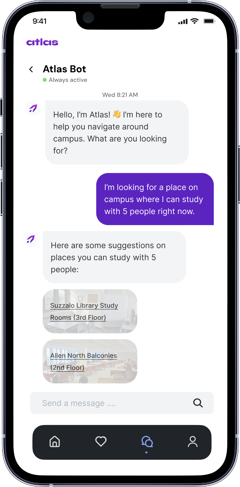
A conversational way in, before AI chat was everywhere.
I designed Atlas Bot, a conversational assistant that turns a plain-language request ("a place to study with 5 people right now") into real, tagged campus suggestions. This was an early decision: ChatGPT had only launched in November 2022, and folding conversational AI into a student product felt genuinely ahead of its time.
It directly answered the survey's sharpest pain point: the student with a project team of five and nowhere to look.
What set Atlas apart
Differentiator 01
Made for students, by students: independently curated pages built per university, gated by .edu verification.
Differentiator 02
Integrates university clubs, organizations, small businesses, and affiliates, connecting them directly to students.
Differentiator 03
Replicable across universities nationwide, with a five-minute setup process per campus.
A business model built into the design
Because I presented design work directly to investors, the product had to carry its own business case. I designed the tiering so the free experience stays genuinely useful while the upgrade paths (for students and for local businesses) are obvious.
Free
$0
- Top reviews
- All locations
- Review-and-unlock model
Student
$4.99 / mo
- Exclusive discounts
- Ad-free
- Unlock all reviews
- Personalized recommendations
- Unlimited tag search
Business
Quoted pricing
- Personalized profile pages
- Ad placements
- Student ambassadors
- + all student benefits
Every corner of campus
The four pillars each open into their own themed home, full of real, student-shot imagery. Every place has a detail page with crowd-sourced tags and friend reviews, plus a review flow built to make contributing fast.
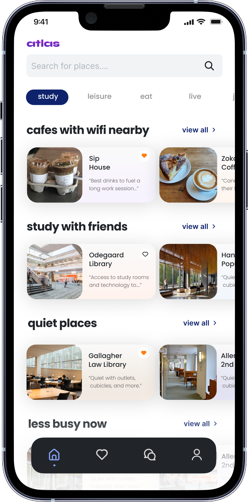
Study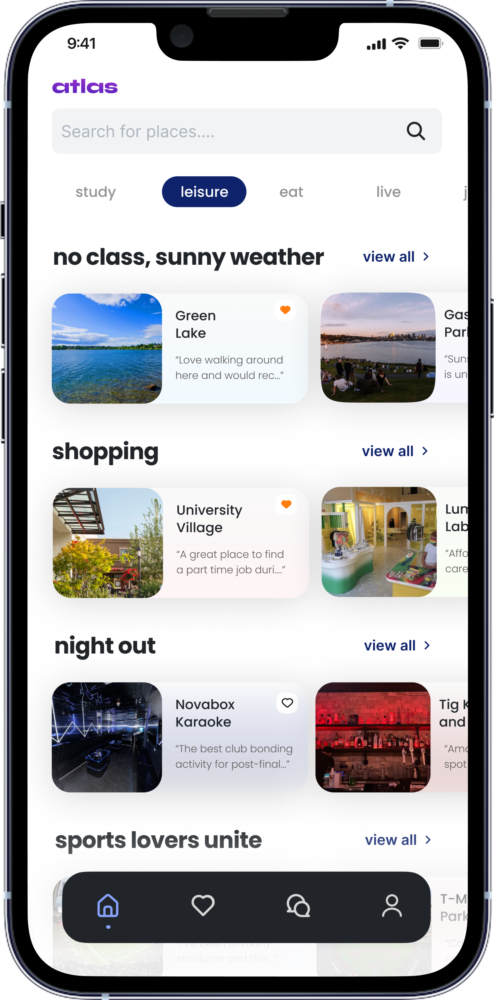
Leisure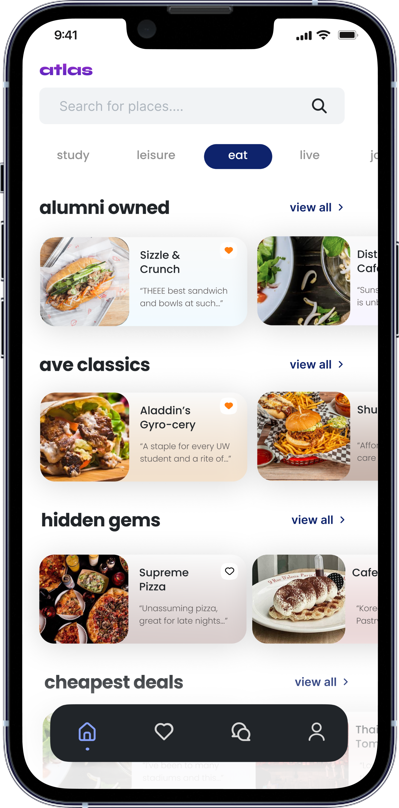
EatPlace details, tags & reviews
Each location carries student-added tags ("Outlets," "Lots of Space," "Boba and Coffee") and friend reviews scored by what actually matters: drinks, ambiance, group-friendliness. The same template flexes from a cafe to a campus club.
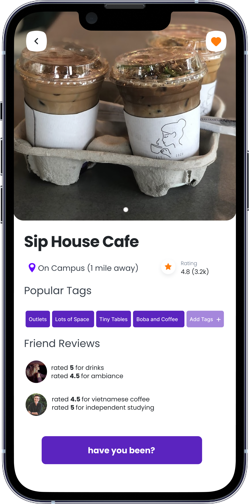
Cafe detail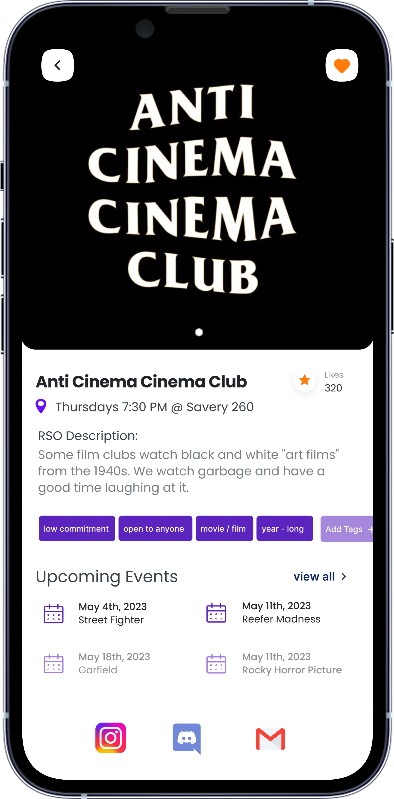
Club / RSO detail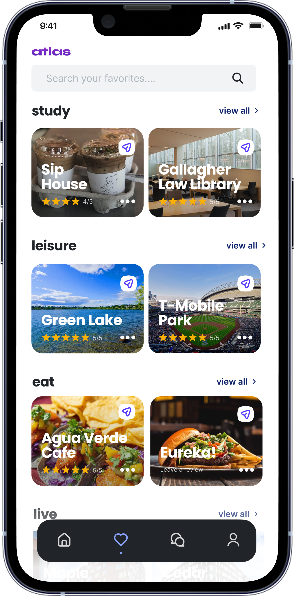
FavoritesContributing back
A tag-first review flow keeps contributing quick, and a small moment of delight closes the loop. The profile gives every student a home for their reviews and the people they follow.
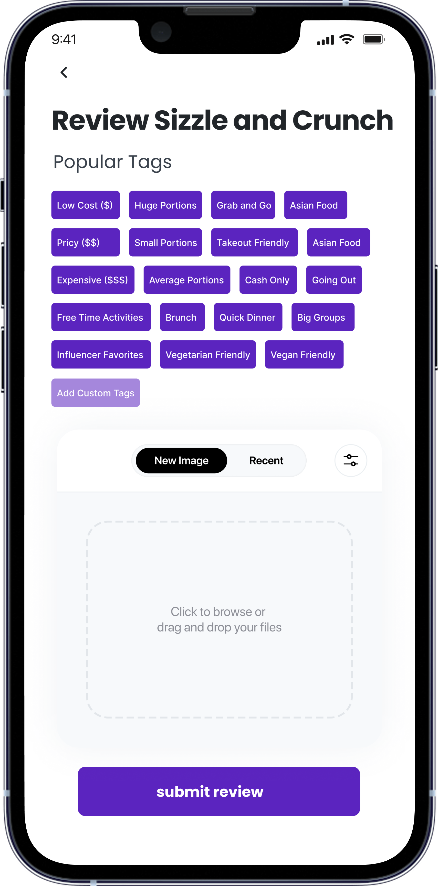
Leave a review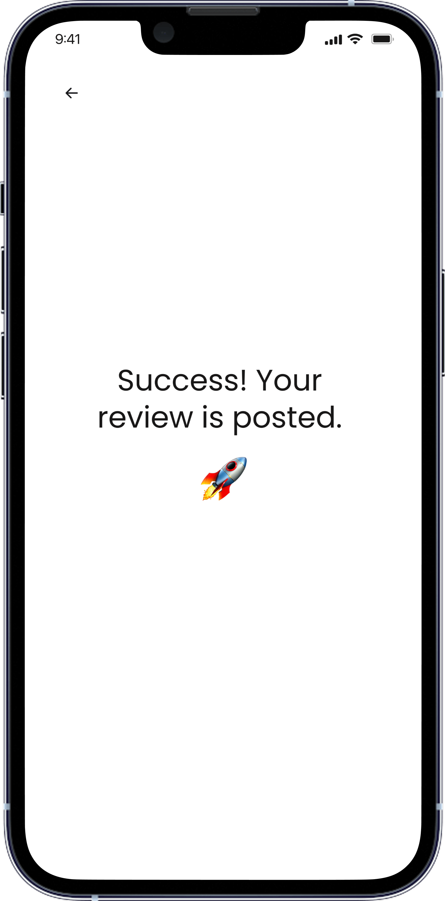
Posted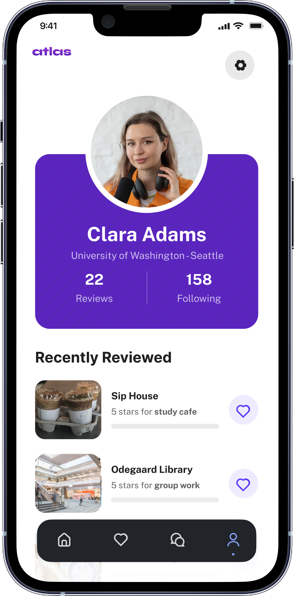
ProfileFrom rough structure to a 15+ feature prototype.
I started low-fidelity, mapping the discovery flow as loose boxes before committing to a single pixel. Working screen by screen with the founders on what to prioritize, I tightened the structure, then layered in the brand and the imagery that makes campus feel alive.
01 · SketchDiscovery as loose boxes: search, category filters, a scannable card grid.
02 · StructurePill tabs for the four pillars, themed rows, persistent bottom nav.
03 · FinalThe shipped discovery screen, branded and full of real campus imagery.
The Atlas design system
To keep a 15+ feature prototype coherent (and easy to replicate per campus), I built a compact system: a bold electric-purple primary, supporting blues, and a clear type hierarchy.
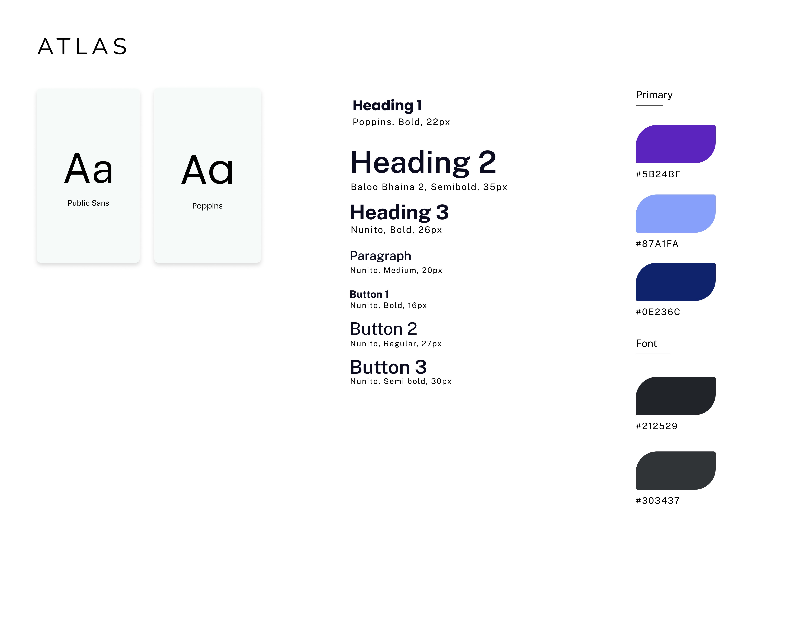
Designing a product, and pitching it.
As the only designer on a pre-seed team, Atlas taught me to design with two audiences in mind at once: the student who needs to find a late-night study spot, and the investor who needs to believe in a business.
I'm proudest of two things. First, the early bet on a conversational AI assistant, made when chat interfaces were still novel. Second, designing Atlas to be genuinely replicable: a geo-lock framework that could stand up a new hub for any campus, or any company, in minutes.
We ultimately never launched Atlas, but being the sole designer meant owning the whole arc: research synthesis, information architecture, brand, UI, and the story we told on stage. It's the project that taught me how much design can carry when it's also the pitch.